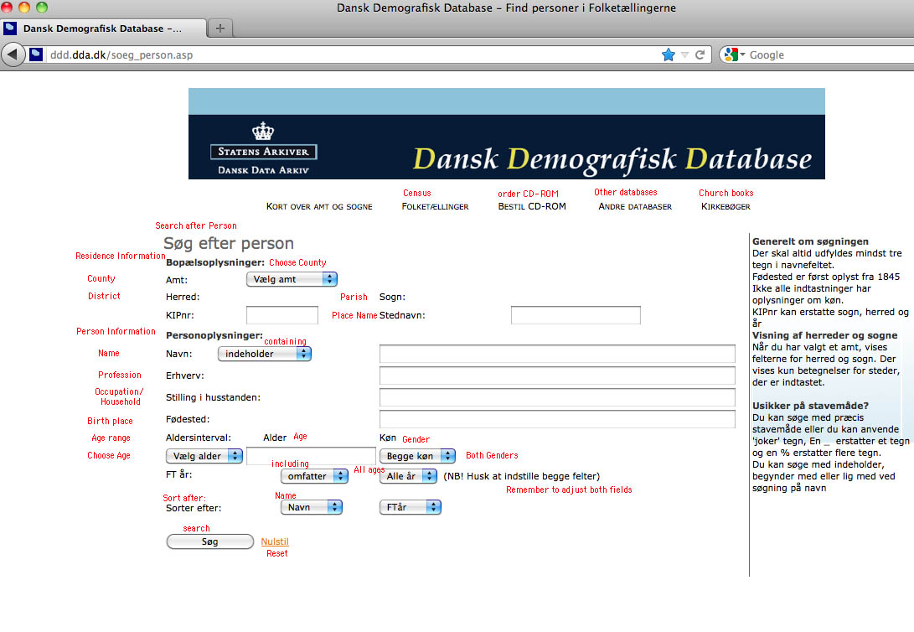
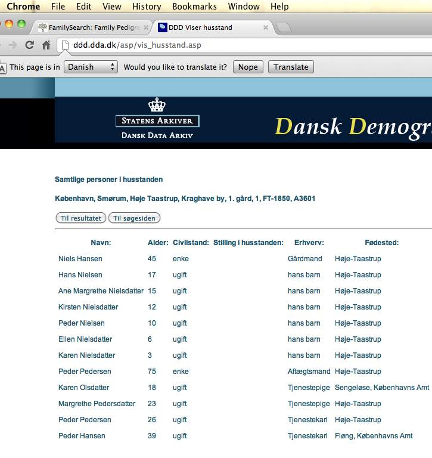
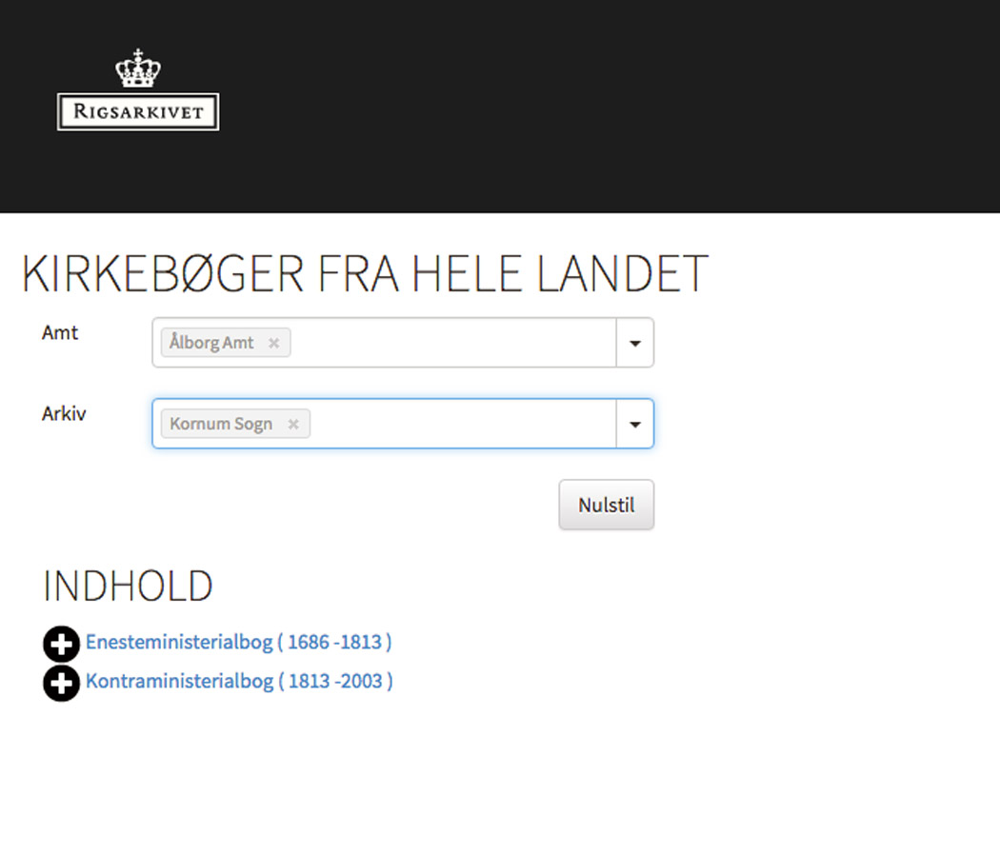
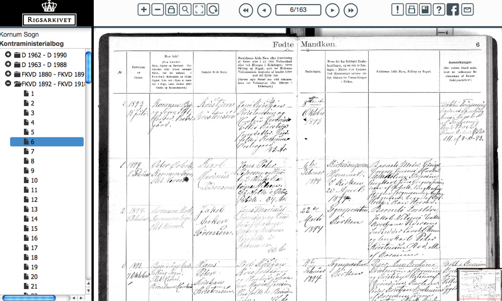
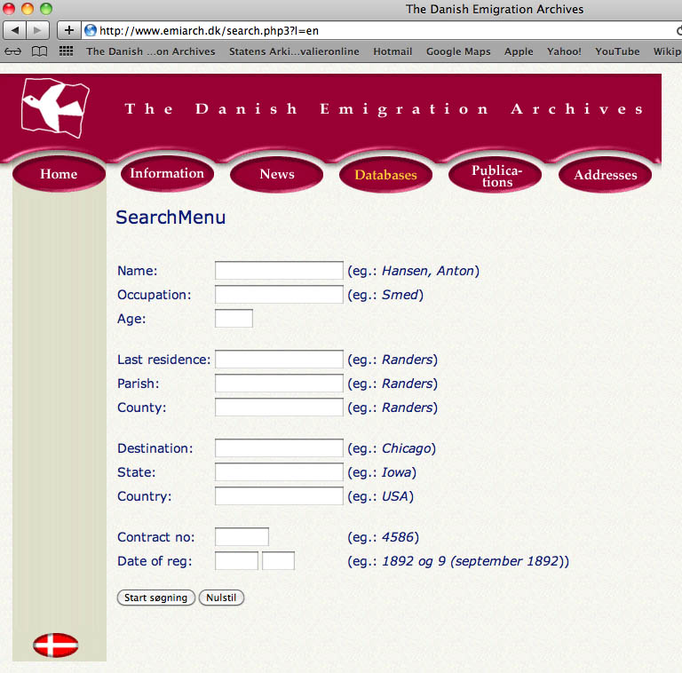
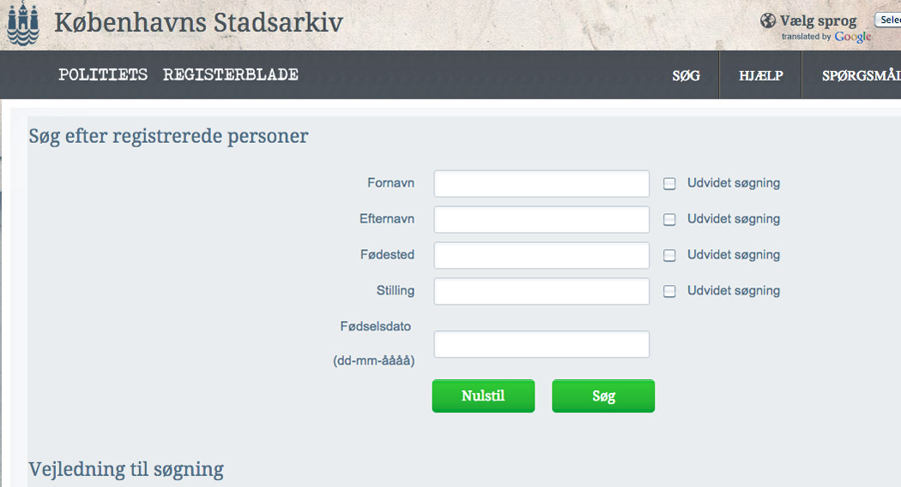

Danish Resources:
Danish Census search
Danish State Archives: Search Church Records
Danish State Archives: Search Military Levying Rolls
Military location (laegd) numbers lists.
Danish Emigration Archives
Danish Cemetery registry
Copenhagen City Political Records search
Aurelia Clemons probates extraction
PDF documents (mostly from the Danish Genealogy Helper):
Danish Counties
Danish Census
Danish Feast Days
Danish handwriting
Danish record types
Danish word list
Images showing the online services (Web pages change, but the basic functionality is the same):



Once you get into the records, there are usually several collections listed. If the years overlap, check in each for appropriate records. The following codes are used: D = deaths; F = births; V = Marriages; K = confirmations; T = arrivals; A = departures; J = index records.



Last updated: 7/15/2025